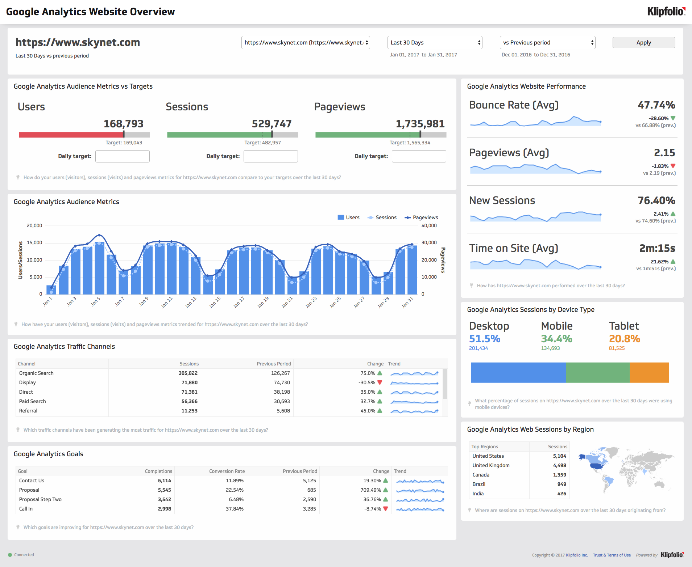
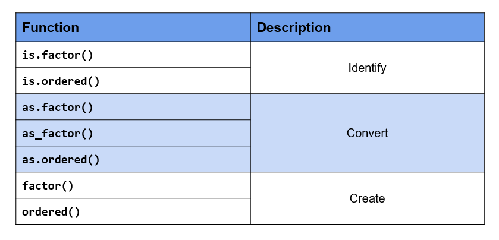
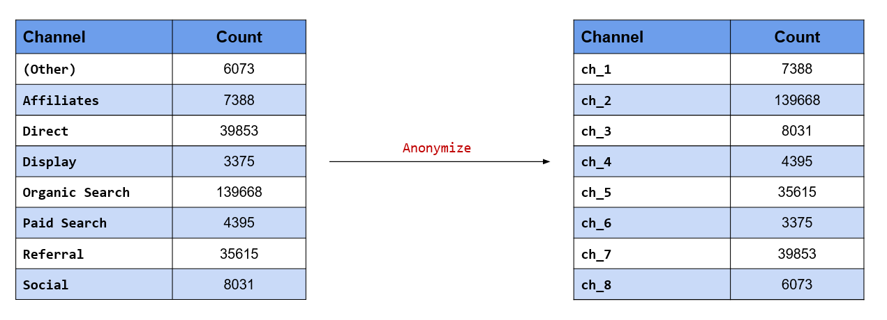
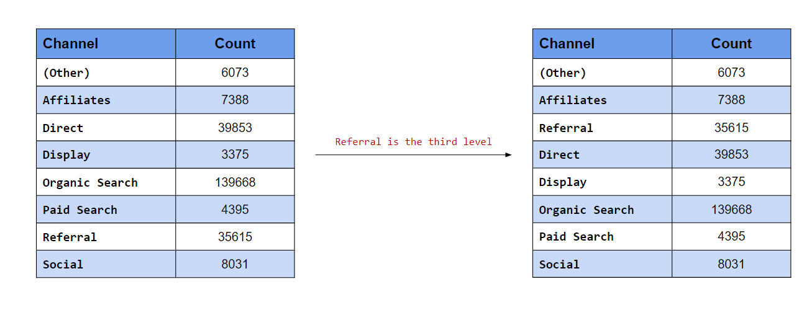
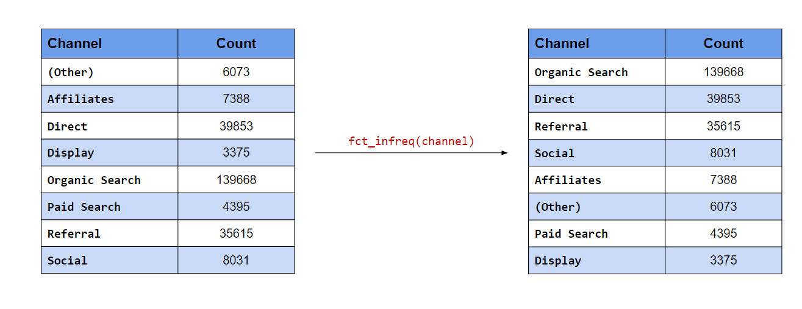

Chapter 10 Categorical Data
10.1 Introduction
Handling categorical/qualitative data is integral to data analysis. Almost every data science project involves working with categorical data and students should know how to store, summarize, visualize & manipulate such data. Working with categorical data is different from working with numbers or text. In this chapter, we will understand categorical data and explore the rich set of functions (built-in & through packages) provided by R for working with such data. The word categorical is used interchangeably with qualitative.
10.1.1 Data Types
Before we begin our deep dive on categorical data, let us get a quick overview of different data types.

In the chart above, we can see that data can be primarily classified into qualitative or quantitative. Qualitative data consists of labels or names. Quantitative data, on the other hand, consists of numbers and indicate how much or how many. This brings us to the next level of classification:
- discrete
- continuous
In the chart, we can observe that qualitative data is always discrete where as quantitative data may be discrete or continuous. Qualitative data is further classified into
- nominal
- ordinal
First, we will understand discrete and continuous data, and then proceed to explore nominal and ordinal data.
Discrete Data

Discrete data arises in situations where counting is involved. It can take on only a finite number of values and cannot be divided into smaller parts. For example, let us consider the number of students in a class. We can have 5 0r 10 students but not 5.5 students (we can’t have half a student).
Continuous Data

Continuous data arises in situations where measuring is involved. It can take any numeric value in a specified range and can be divided into smaller parts and still have meaning. Examples include money, temperature, length, volume etc.
10.1.2 Categorical Data
Since our interest is in categorical data, we will spend more time understanding the different types of categorical data through various examples. Let us begin by formally defining categorical data:
- it is always discrete
- it may be divided into groups
- consists of names or labels
- takes on limited & fixed number of possible values
- arises in situation when counting is involved
- analysis generally involves the use of data tables
10.1.3 Dichotomous
A categorical variable that can take on exactly two values is termed as binary or dichotomous variable.
10.1.4 Polychotomous
Categorical variables with more than two possible values are called polychotomous variables.
10.1.5 Ordinal
In ordinal data, the categories can be ordered or ranked. Examples include
- socio-economic status
- education level
- income level
- satisfaction rating
While we can rank the categories, we cannot assign a value to them. For example, in satisfaction ranking, we cannot say that like is twice as positive as dislike i.e. we are unable to say how much they differ from each other. While the order or rank of data is meaningful, the difference between two pieces of data cannot be measured/determined or are meaningless. Ordinal data provide information about relative comparisons, but not the magnitude of the differences.
10.1.6 Nominal
Nominal data do not have an intrinsic order and cannot be ordered or measured. Examples include
- blood group
- gender
- religion
- color
Categorical data are sometimes coded with numbers, with those numbers replacing names. Although such numbers might appear to be quantitative, they are actually categorical data. When they do take numerical values, those numbers do not have any mathematical meaning. Examples include months expressed in numbers.
10.1.7 Summary
- Data can be qualitative or quantitative.
- Qualitative data is always discrete.
- Dichotomous data consists of only 2 groups/levels.
- Polychotomous data consists of more than 2 groups/levels.
- Nominal data do not have an intrinsic order.
- In ordinal data
- categories can be ordered or ranked
- the difference between the categories cannot be determined
10.1.8 Your Turn…
- State whether the following are quantitative or qualitative
- Age
- Gender
- Annual Sales
- Weight
- Education Level
- Vehicle Type
- Height
- Ice Cream Flavor
- Job/Work Experience
- Blood Group
- Color
- Mode of Payment
- State whether the following are dichotomous or polychotomous
- Heads / Tails
- Blood Group
- Transportation Mode
- Rich / Poor
- Democrat / Republican
- Education Level
- Gender
- Pass / Fail
- Yes / No
- Positive / Negative
- State whether the following are nominal or ordinal
- STD Codes
- Prepaid / Postpaid
- Hotel Ratings
- Smart Phone Brands
- Student Grades
- Cellular Operator
- ISPs (Internet Service Providers)
- Occupation
- Bank Account Number
- Class of Travel
- Military Rank
10.2 Case Study
As is the practice, throughout this chapter, we will work on a case study related to an e-commerce firm. As most of you would already be aware, a lot of data is captured when you go on the internet by the websites you browse as well as by third party cookies. Data collected is then used to display ads as well as to feed to recommendation algorithms.
The data used in the case study represents the basic information that is captured when users visit any website. It closely resembles real world data for an e-commerce store. We will try to generate insights about the visitors to be used by an imaginary marketing team for better targeting and promotion. The case study data set can be imported using the RStudio IDE or R code.

10.2.1 Data
The data set is available in both CSV & RDS formats.
CSV
If you want to specify the data types while reading the data, use the readr package. We have explored how to import data into R in a previous chapter. We will read a subset of columns from the data set (it has 20 columns) which will cover both nominal and ordinal data types. To import the data, we will use the read_csv() function. The first input is the name of the data set,
analytics.csv. Ensure that the name is enclosed in single/double quotes.
read_csv("analytics_raw.csv",
col_types = cols_only(device = col_factor(levels = c("Desktop", "Tablet", "Mobile")),
gender = col_factor(levels = c("female", "male", "NA")),
user_rating = col_factor(levels = c("1", "2", "3", "4", "5"),
ordered = TRUE)))## Warning: Missing column names filled in: 'X1' [1]## # A tibble: 244,398 x 3
## device gender user_rating
## <fct> <fct> <ord>
## 1 Desktop female 4
## 2 Mobile <NA> 5
## 3 Desktop <NA> 4
## 4 Desktop <NA> 5
## 5 Desktop <NA> 4
## 6 Mobile <NA> 4
## 7 Desktop <NA> 4
## 8 Desktop <NA> 4
## 9 Desktop female 5
## 10 Desktop <NA> 4
## # ... with 244,388 more rowsSince we are specifying the column data types while importing the data, we will use the col_types
argument to list out the data types. As we are reading in a subset of the columns and not all of them,
we will use the cols_only() function indicating that only the columns specified must be read in and not
all of them.
Categorical data and the levels/groups are specified using the col_factor() function. Use the
levels argument to specify the levels/groups and the ordered argument to indicate if the data is ordinal. By default, it is set to FALSE, change this to TRUE if the column is ordinal.
RDS
The .rds file can be read using readRDS().
data <- readRDS('analytics.rds')
head(data)## # A tibble: 6 x 19
## device os browser user_type channel gender frequency
## <fct> <fct> <fct> <fct> <fct> <fct> <dbl>
## 1 Desktop Windows Chrome New Visitor Organic Search female 1
## 2 Mobile iOS Safari Returning Visitor Organic Search <NA> 3
## 3 Desktop Chrome OS Chrome New Visitor Direct <NA> 1
## 4 Desktop Macintosh Chrome Returning Visitor Organic Search <NA> 2
## 5 Desktop Macintosh Chrome Returning Visitor Referral <NA> 5
## 6 Mobile Android Chrome New Visitor Organic Search <NA> 1
## recency page_depth hour_of_day age duration landing_page exit_page
## <dbl> <dbl> <chr> <dbl> <dbl> <fct> <fct>
## 1 0 1 02 64 0 Home Home
## 2 1 1 20 NA 0 Accessories Accessories
## 3 0 5 05 NA 238 Sign In Shop by Brand
## 4 0 1 17 NA 0 Apparel Apparel
## 5 8 1 04 NA 0 Shop by Brand Shop by Brand
## 6 0 5 00 NA 110 Apparel Lifestyle
## country quantity revenue purchase_flag user_rating
## <fct> <dbl> <dbl> <lgl> <dbl>
## 1 France 0 0 FALSE 4
## 2 Norway 0 0 FALSE 5
## 3 India 0 0 FALSE 4
## 4 Ukraine 0 0 FALSE 5
## 5 Chile 0 0 FALSE 4
## 6 United Kingdom 0 0 FALSE 410.2.2 Data Dictionary
| Column | Description |
|---|---|
| device | Device used to browse the website |
| os | Operating system of the device |
| browser | Browser used to visit the website |
| user_type | New or returning visitor |
| channel | Source of traffic |
| gender | Gender of the visitor |
| frequency | Count of visits to the website |
| recency | Number of days since last visit |
| page_depth | Number of website pages browsed |
| hour_of_day | Hour of day |
| age | Age of the visitor |
| duration | Time spent on the website (in seconds) |
| landing_page | Page on which visitor landed |
| exit_page | Page on which visitor exited |
| country | Country of origin |
| city | City of the visitor |
| quantity | Number of units purchased |
| revenue | Total revenue |
| purchase_flag | Whether the visitor checked out? |
| user_rating | Website UI rating given by visitor |
10.3 Factors
In this very important section, we will learn how R
- stores categorical data
- checks if given data is categorical
- converts other data types to factor
- handles missing values in categorical data
- specifies the orders of the categories/levels
- stores ordinal data
10.3.1 Introduction
In R, categorical data is stored as factor. Before we explore the factor family of functions, let us generate the sample data we will use in this module. We will generate the device column from the case study data set using the sample() function. We provide the following inputs to generate the data:
- values from which the data must be generated
- the size of the sample
- indicate if the values must be repeated (TRUE/FALSE)
device <- sample(c("Desktop", "Mobile", "Tablet"), size = 25, replace = TRUE)
device## [1] "Desktop" "Desktop" "Tablet" "Tablet" "Desktop" "Tablet" "Mobile"
## [8] "Mobile" "Mobile" "Desktop" "Tablet" "Desktop" "Mobile" "Tablet"
## [15] "Desktop" "Desktop" "Mobile" "Desktop" "Desktop" "Desktop" "Tablet"
## [22] "Desktop" "Tablet" "Tablet" "Desktop"10.3.2 Membership Testing
Great! We have successfully generated the sample data and along the way learnt a new R function for sampling. First, let us check if the sample is a factor using the membership function is.factor().
is.factor(device)## [1] FALSEMembership testing functions always have the prefix is_ and return only logical values. If the object is a member of the specified class, they return TRUE else FALSE. Since our sample data is not stored as a factor, R has returned FALSE.
10.3.3 Coercion
Let us try to coerce it into factor using the coercion function as.factor().
as.factor(device)## [1] Desktop Desktop Tablet Tablet Desktop Tablet Mobile Mobile Mobile
## [10] Desktop Tablet Desktop Mobile Tablet Desktop Desktop Mobile Desktop
## [19] Desktop Desktop Tablet Desktop Tablet Tablet Desktop
## Levels: Desktop Mobile TabletDo you spot any difference in the output? In the last line, it displays the levels or categories of the variable. Don’t worry if you didn’t spot it. We are just getting started and you will pick it up by the end of this section. Another function that can be used to coerce data into factor is as_factor() from the forcats package.
as_factor(device)## [1] Desktop Desktop Tablet Tablet Desktop Tablet Mobile Mobile Mobile
## [10] Desktop Tablet Desktop Mobile Tablet Desktop Desktop Mobile Desktop
## [19] Desktop Desktop Tablet Desktop Tablet Tablet Desktop
## Levels: Desktop Tablet MobileDid you notice any difference between these two functions? Focus on the last line of the output where the
levels are displayed. Now observe the order of the levels. as.factor() displays levels in the alphabetical order whereas as_factor() displays them in order of appearance in the data. Mobile, followed by Tablet, and then Desktop. If you look at the data, they appear in the same order.
10.3.4 Factor Function
If you want finer control while creating factors, use the factor() function. as.factor() should suffice in most cases but use factor() when you want to:
- specify levels
- modify labels
- include
NAas a level/category - create ordered factors
- specify order of levels
The first input is a vector, usually a numeric or character vector with a small number of unique values. In our example, it is a character vector of length 25 (i.e. 25 values) but 3 unique values.
factor(device)## [1] Desktop Desktop Tablet Tablet Desktop Tablet Mobile Mobile Mobile
## [10] Desktop Tablet Desktop Mobile Tablet Desktop Desktop Mobile Desktop
## [19] Desktop Desktop Tablet Desktop Tablet Tablet Desktop
## Levels: Desktop Mobile TabletIf you want to specify the levels or categories, use the levels argument.
factor(device, levels = c("Desktop", "Mobile", "Tablet"))## [1] Desktop Desktop Tablet Tablet Desktop Tablet Mobile Mobile Mobile
## [10] Desktop Tablet Desktop Mobile Tablet Desktop Desktop Mobile Desktop
## [19] Desktop Desktop Tablet Desktop Tablet Tablet Desktop
## Levels: Desktop Mobile TabletLevels not specified will be replaced by NA. Let us specify only Desktop and Mobile as the levels in the device column and see what happens.
factor(device, levels = c("Desktop", "Mobile"))## [1] Desktop Desktop <NA> <NA> Desktop <NA> Mobile Mobile Mobile
## [10] Desktop <NA> Desktop Mobile <NA> Desktop Desktop Mobile Desktop
## [19] Desktop Desktop <NA> Desktop <NA> <NA> Desktop
## Levels: Desktop MobileAs you can see, Tablet has been replaced by NA.
10.3.5 Modify Labels
You can change the labels of the levels using the labels argument. The labels must be in the same order as the levels. We will modify the labels to Desk, Mob & Tab for Desktop, Mobile & Tablet respectively.
factor(device,
levels = c("Desktop", "Mobile", "Tablet"),
labels = c("Desk", "Mob", "Tab"))## [1] Desk Desk Tab Tab Desk Tab Mob Mob Mob Desk Tab Desk Mob Tab Desk
## [16] Desk Mob Desk Desk Desk Tab Desk Tab Tab Desk
## Levels: Desk Mob TabYou can see that not only the values but the levels are also modified.
10.3.6 Missing Values
Let us regenerate the device column but include some missing values (NA) deliberately to see how factor() handles them.
# sample with missing values
device <- sample(c("Desktop", "Mobile", "Tablet", NA), size = 25, replace = TRUE)
device## [1] "Desktop" "Desktop" NA "Mobile" "Desktop" "Tablet" NA
## [8] "Mobile" "Tablet" NA "Mobile" NA "Mobile" "Tablet"
## [15] "Mobile" "Mobile" NA "Tablet" "Desktop" "Tablet" NA
## [22] NA "Tablet" "Tablet" "Tablet"# store as categorical data
factor(device)## [1] Desktop Desktop <NA> Mobile Desktop Tablet <NA> Mobile Tablet
## [10] <NA> Mobile <NA> Mobile Tablet Mobile Mobile <NA> Tablet
## [19] Desktop Tablet <NA> <NA> Tablet Tablet Tablet
## Levels: Desktop Mobile TabletNA is not shown as one of the levels. Why does this happen? By default, it will ignore them. If you look
at the arguments of the factor() function, the exclude argument is set to NA by default i.e. NA is excluded automatically. What should we do to ensure that NA is also treated as a level? In order to treat NA as a level, set the exclude argument to NULL.
factor(device, exclude = NULL)## [1] Desktop Desktop <NA> Mobile Desktop Tablet <NA> Mobile Tablet
## [10] <NA> Mobile <NA> Mobile Tablet Mobile Mobile <NA> Tablet
## [19] Desktop Tablet <NA> <NA> Tablet Tablet Tablet
## Levels: Desktop Mobile Tablet <NA>As you can see, NA is displayed as one of the levels in the data.
10.3.7 Ordered Factors
So far, we have been looking at nominal data. Let us now explore how R handles ordered data. We will generate a new data set of satisfaction ratings to use in this section. Satisfaction ratings are widely used to measure a customer’s satisfaction with an organization, service or a product.
rating <- sample(c("Dislike", "Neutral", "Like"), size = 25, replace = TRUE)
rating## [1] "Like" "Like" "Dislike" "Neutral" "Dislike" "Like" "Neutral"
## [8] "Dislike" "Like" "Neutral" "Like" "Like" "Like" "Dislike"
## [15] "Dislike" "Neutral" "Neutral" "Like" "Neutral" "Neutral" "Dislike"
## [22] "Neutral" "Neutral" "Dislike" "Like"It consists of three values Dislike, Neutral & Like in that order. You can see that there is an intrinsic order here. Like is better than neutral which in turn is better than dislike. While we can order them, we can’t quantify the difference between them. We can’t say neutral is so many times better than dislike.
Membership Testing
As we did earlier, let us check if the data is ordered using the membership function is.ordered().
is.ordered(rating)## [1] FALSER returns FALSE as the variable rating is not ordered. Let us use as.ordered() to coerce it into an ordered factor.
as.ordered(rating)## [1] Like Like Dislike Neutral Dislike Like Neutral Dislike Like
## [10] Neutral Like Like Like Dislike Dislike Neutral Neutral Like
## [19] Neutral Neutral Dislike Neutral Neutral Dislike Like
## Levels: Dislike < Like < NeutralLook at the last line where the levels are displayed. In case of ordered factors, you will see a < between the labels. This is used to indicate the order of the levels. Now rating is both an ordered but the order of the levels is not correct. It should be Dislike < Neutral < Like but is displayed in order of appearance in the data. Let us use the factor() function since we need more control over how the levels are ranked and set the ordered argument to TRUE.
factor(rating, ordered = TRUE)## [1] Like Like Dislike Neutral Dislike Like Neutral Dislike Like
## [10] Neutral Like Like Like Dislike Dislike Neutral Neutral Like
## [19] Neutral Neutral Dislike Neutral Neutral Dislike Like
## Levels: Dislike < Like < NeutralThe ranking of the levels has not changed and is still the same. Why is this happening? If you observe carefully, the ranking follows the alphabetical order (Desktop, Mobile, Table). The factor() function uses the same order for the levels.
10.3.8 Modify Order of Levels
To change the order/ranking of the levels, we need to specify it using the levels argument. Let us do that in the next example.
factor(rating, levels = c("Dislike", "Neutral", "Like"), ordered = TRUE)## [1] Like Like Dislike Neutral Dislike Like Neutral Dislike Like
## [10] Neutral Like Like Like Dislike Dislike Neutral Neutral Like
## [19] Neutral Neutral Dislike Neutral Neutral Dislike Like
## Levels: Dislike < Neutral < LikeNow, you can see that the levels are ranked correctly. The ordered() function can also be used to create ordered factors. Let us recreate the previous example using the ordered() function.
ordered(rating, levels = c("Dislike", "Neutral", "Like"))## [1] Like Like Dislike Neutral Dislike Like Neutral Dislike Like
## [10] Neutral Like Like Like Dislike Dislike Neutral Neutral Like
## [19] Neutral Neutral Dislike Neutral Neutral Dislike Like
## Levels: Dislike < Neutral < LikeYou can specify levels, modify labels and handle missing values using the ordered() function as well.
10.3.9 Key Functions

10.3.10 Summary
- R uses factor to handle categorical data.
- Use
as.factor()oras_factor()to coerce other data types to factor. - Use
is.factor()oris.ordered()to identify factor & ordered factor respectively. - Use
factor()to- specify labels
- modify labels
- handle missing data
- create ordered factors
- specify order of levels
- Use
ordered()to create ordered factors.
10.3.11 Your Turn…
Use analytics_raw.rds data set to answer the below questions.
Check whether the below variables are factor
devicepage_depthlanding_page
Coerce the following variables to type factor
deviceosbrowseruser_typechannelgenderlanding_pageexit_pagecitycountryuser_type
Use only the following levels in the
gendercolumn:malefemale
Include
NAas a level in the gender column.Change label of
NAtomissingin thegendercolumn.Change the labels of the levels in
user_typecolumn toNewReturning
Check if the
user_ratingcolumn is ordered. If not, coerce it to type ordered factor.
10.4 Summarize
10.4.1 Introduction
Categorical data cannot be summarized in the same way as numeric data. It does not make sense to look at range, standard deviation etc. since data consists of a few distinct values only. So how do we summarize such data? We can look at
- count/frequency
- proportion
- cumulative frequency
- cross table
- contingency table etc.
In this section, we will explore the above ways of summarizing categorical data. We will also spend some time learning about tables as you will be using them extensively while working with categorical data. R has many packages for tabulating data and we list and explore all of them in the last section of this chapter.
10.4.2 Number of Categories
From our case study, we want to know the number of devices used to browse the website, the name of the
devices and the proportion of traffic they drive to our website. Let us begin with the number of devices. To
view the number of groups/categories in a categorical variable, use nlevels().
nlevels(data$device)## [1] 3There are 3 categories of devices used by the visitors to browse the website. This can also be used for data
sanitization i.e. as an analyst you know that there are only 3 valid categories of device into which any visitor can be classified into. If you see more than 3 categories, you might want to check if there are any issues in data collection or processing. Now that we know there are 3 categories of devices, let us check if they are valid. The levels() function will return the labels of the groups.
10.4.3 Category Names
Knowing the number of levels is useful but not sufficient. levels() is one of the most useful functions when it comes to dealing with categorical data.
levels(data$device)## [1] "Desktop" "Mobile" "Tablet"Other functions that you can use include unique() and fct_unique(). Both these functions will return the unique names/labels along with the levels while levels() returns the labels of the levels.
unique(data$device)## [1] Desktop Mobile Tablet
## Levels: Desktop Mobile Tabletfct_unique(data$device)## [1] Desktop Mobile Tablet
## Levels: Desktop Mobile Tablet10.4.4 Names & Counts
So we have checked the number of devices and their names. Let us now examine their distribution
i.e. count/frequency. table() and summary() will display the levels and their counts while fct_count()
will return a tibble with 2 columns (level & count). It is extremely useful for further data processing or
visualization (using ggplot2).
table(data$device)##
## Desktop Mobile Tablet
## 177282 63482 3634fct_count(data$device)## # A tibble: 3 x 2
## f n
## <fct> <int>
## 1 Desktop 177282
## 2 Mobile 63482
## 3 Tablet 3634summary(data$device)## Desktop Mobile Tablet
## 177282 63482 363410.4.5 Tables
In the previous section, we used the table() function to tabulate categorical data. We will
recreate the tabulation for device and store it in a new variable tab.
tab <- table(data$device)
tab##
## Desktop Mobile Tablet
## 177282 63482 3634What does this function return? It is not a vector, list, data.frame or matrix. Let us use the class() function to check the class of the object returned by table(). It returns an object of the class table. This is a new type of object. Let us spend some time understanding tables as they are useful for organizing and summarizing categorical data. table is also the most used object when it comes to dealing with categorical data.
The table() function returns the counts of the categories but let us say we want to view the proportion or
percentage instead of counts i.e. the proportion or percentage of traffic driven to our website by the different devices. The proportions() or prop.table() function comes in handy in such cases. It takes a table object as input (tab in our case).
prop.table(tab)##
## Desktop Mobile Tablet
## 0.72538237 0.25974844 0.01486919proportions(tab)##
## Desktop Mobile Tablet
## 0.72538237 0.25974844 0.01486919To get the percentages, multiply the output by 100. Use the round() function to round the decimal places
according to your requirements.
proportions(tab) * 100##
## Desktop Mobile Tablet
## 72.538237 25.974844 1.486919round(proportions(tab) * 100, 2)##
## Desktop Mobile Tablet
## 72.54 25.97 1.49So far, we have used table() to tabulate a single categorical variable. It can be used for a lot
more than just tabulating data. We can examine the relationship between two categorical variables as well
as create multidimensional tables. Let us look at the relationship between gender and device in our case study. Does gender affect the type of device used? To answer this, we will create a two way or cross table. In the table() function, we can specify multiple variables by separating them with a comma.
tab2 <- table(data$gender, data$device)
tab2##
## Desktop Mobile Tablet
## female 32803 7268 494
## male 46418 14503 696
## <NA> 98061 41711 2444Keep in mind that the order of the variables matter. Rows represent the first variable while column represents the second.
table(data$device, data$gender)##
## female male <NA>
## Desktop 32803 46418 98061
## Mobile 7268 14503 41711
## Tablet 494 696 2444The proportions() function works with two way tables as well.
proportions(tab2)##
## Desktop Mobile Tablet
## female 0.134219593 0.029738378 0.002021293
## male 0.189927904 0.059341729 0.002847814
## <NA> 0.401234871 0.170668336 0.010000082proportions(tab2) * 100##
## Desktop Mobile Tablet
## female 13.4219593 2.9738378 0.2021293
## male 18.9927904 5.9341729 0.2847814
## <NA> 40.1234871 17.0668336 1.0000082We would like to introduce another function at this point of time, margin.table(). What does this function do? It computes the marginal frequencies i.e. the sum of the rows or columns. It takes a table object as input. The margin argument allows us to specify whether we want the sum of rows or columns. 1 indicates rows and 2 indicates columns.
margin.table(tab2, 1) # sum of rows##
## female male <NA>
## 40565 61617 142216margin.table(tab2, 2) # sum of columns##
## Desktop Mobile Tablet
## 177282 63482 3634If the margin argument is NULL (which it is by default), the function returns the sum of all cells of the table.
margin.table(tab2)## [1] 244398table() does not display row or column labels. It does display the group labels though. Let us revisit the output from tab2. You can observe that while it includes the group labels, the row and column labels are missing. The output from the dimnames() function shows the group labels of the variables but the row & column labels are absent.
dimnames(tab2)## [[1]]
## [1] "female" "male" NA
##
## [[2]]
## [1] "Desktop" "Mobile" "Tablet"names(tab2)## NULLnames(dimnames(tab2)) ## [1] "" ""The output from names(dimnames(tab2)) is also empty. Let us add the variable names as the row & column
labels to tab2.
names(dimnames(tab2)) <- c("Gender", "Device")
tab2## Device
## Gender Desktop Mobile Tablet
## female 32803 7268 494
## male 46418 14503 696
## <NA> 98061 41711 2444Now look at the output from tab2 and you can observe the difference. The same is also visible when we run
dimnames(tab2).
dimnames(tab2)## $Gender
## [1] "female" "male" NA
##
## $Device
## [1] "Desktop" "Mobile" "Tablet"To add margin totals to the table, use addmargins(). Like proportions() and margin.table(), it also takes a table object as the input.
addmargins(tab2)## Device
## Gender Desktop Mobile Tablet Sum
## female 32803 7268 494 40565
## male 46418 14503 696 61617
## <NA> 98061 41711 2444 142216
## Sum 177282 63482 3634 244398rowSums() returns the row total while colSums() returns the column total. They are similar to margin.table().
rowSums(tab2)## female male <NA>
## 40565 61617 142216colSums(tab2)## Desktop Mobile Tablet
## 177282 63482 3634xtabs() is another way of creating multidimensional tables in R. In comparison to table(), it
- uses
formulanotation for input - the data argument ensures variable names are referenced instead of using $ i.e.
data$variable - displays row & column labels by default
tabx <- xtabs(~gender+device, data = data)
tabx## device
## gender Desktop Mobile Tablet
## female 32803 7268 494
## male 46418 14503 696
## <NA> 98061 41711 2444The following functions work with xtabs() as well
proportions()margin.table()addmargins()
proportions(tabx)## device
## gender Desktop Mobile Tablet
## female 0.134219593 0.029738378 0.002021293
## male 0.189927904 0.059341729 0.002847814
## <NA> 0.401234871 0.170668336 0.010000082margin.table(tabx, 1)## gender
## female male <NA>
## 40565 61617 142216margin.table(tabx, 2)## device
## Desktop Mobile Tablet
## 177282 63482 3634addmargins(tabx)## device
## gender Desktop Mobile Tablet Sum
## female 32803 7268 494 40565
## male 46418 14503 696 61617
## <NA> 98061 41711 2444 142216
## Sum 177282 63482 3634 244398So far, we have been working with one or two dimensional tables. Both the table() and xtabs() functions are capable of creating multidimensional tables. Keep in mind that multidimensional tables are complex and it becomes increasingly difficult to understand or interpret them.
tab3 <- xtabs(~gender+device+channel, data = data)
tab3## , , channel = (Other)
##
## device
## gender Desktop Mobile Tablet
## female 786 258 0
## male 1063 507 19
## <NA> 2173 1186 81
##
## , , channel = Affiliates
##
## device
## gender Desktop Mobile Tablet
## female 1314 60 0
## male 1714 169 0
## <NA> 3518 548 65
##
## , , channel = Direct
##
## device
## gender Desktop Mobile Tablet
## female 4785 977 59
## male 7010 2381 95
## <NA> 15824 8292 430
##
## , , channel = Display
##
## device
## gender Desktop Mobile Tablet
## female 123 753 104
## male 210 491 73
## <NA> 554 911 156
##
## , , channel = Organic Search
##
## device
## gender Desktop Mobile Tablet
## female 17109 4480 282
## male 25016 9563 448
## <NA> 54071 27223 1476
##
## , , channel = Paid Search
##
## device
## gender Desktop Mobile Tablet
## female 645 230 22
## male 887 478 26
## <NA> 1274 782 51
##
## , , channel = Referral
##
## device
## gender Desktop Mobile Tablet
## female 7387 74 0
## male 9251 185 0
## <NA> 18052 615 51
##
## , , channel = Social
##
## device
## gender Desktop Mobile Tablet
## female 654 436 27
## male 1267 729 35
## <NA> 2595 2154 134ftable stands for flat tables and is useful for printing attractive tables. It makes it easy to read and interpret multidimensional tables. In the next example, we will use ftable() to print the tables we have created in the previous examples and compare the outputs.
ftable(tabx)## device Desktop Mobile Tablet
## gender
## female 32803 7268 494
## male 46418 14503 696
## NA 98061 41711 2444ftable(tab2)## Device Desktop Mobile Tablet
## Gender
## female 32803 7268 494
## male 46418 14503 696
## NA 98061 41711 2444ftable(tab3)## channel (Other) Affiliates Direct Display Organic Search Paid Search Referral Social
## gender device
## female Desktop 786 1314 4785 123 17109 645 7387 654
## Mobile 258 60 977 753 4480 230 74 436
## Tablet 0 0 59 104 282 22 0 27
## male Desktop 1063 1714 7010 210 25016 887 9251 1267
## Mobile 507 169 2381 491 9563 478 185 729
## Tablet 19 0 95 73 448 26 0 35
## NA Desktop 2173 3518 15824 554 54071 1274 18052 2595
## Mobile 1186 548 8292 911 27223 782 615 2154
## Tablet 81 65 430 156 1476 51 51 134By default, missing values (NAs) are excluded from tables. Let us modify the gender data from our case study a bit and see how the table() function deals with missing values. We won’t explicitly specify NA as a level while recreating the gender data.
gen <- as.factor(as.character(data$gender))
table(gen)## gen
## female male
## 40565 61617As you can see, table() excludes missing values while tabulating the data. In order to ensure that missing
values are also counted, we can use the useNA argument. It can take two values:
- ifany
- always
In the first case, it will show NA as a level and the count only if there are missing values in the data. In the second case, it will always show NA as a level irrespective of whether there are missing values in the data or not.
table(gen, useNA = "ifany")## gen
## female male <NA>
## 40565 61617 142216table(data$device, useNA = "always")##
## Desktop Mobile Tablet <NA>
## 177282 63482 3634 0In this final section on tables, we will learn how to select/access the different parts of a table. We will use [ operator to select rows and columns of a table (it is similar to selecting data from a
data.frame). Below are a few examples:
- select first row
tab2[1, ] ## Desktop Mobile Tablet
## 32803 7268 494- select first column
tab2[, 1] ## female male <NA>
## 32803 46418 98061- select first two rows
tab2[1:2, ] ## Device
## Gender Desktop Mobile Tablet
## female 32803 7268 494
## male 46418 14503 696- select first two columns
tab2[, 1:2] ## Device
## Gender Desktop Mobile
## female 32803 7268
## male 46418 14503
## <NA> 98061 41711- select nth row
tab2[2, ] ## Desktop Mobile Tablet
## 46418 14503 696- select nth column
tab2[, 2] ## female male <NA>
## 7268 14503 41711- select row by group label
tab2["female", ] ## Desktop Mobile Tablet
## 32803 7268 494- select column by group label
tab2[, "Mobile"] ## female male <NA>
## 7268 14503 41711Before we end this section, let us learn how to test if an object is of class table using is.table().
is.table(tab2)## [1] TRUENext, we will look at different R packages for two way/contingency tables.
10.4.6 Contingency Table
For cross tables with output similar to SAS or SPSS, use any of the below:
gmodels::CrossTable(data$device, data$gender)##
##
## Cell Contents
## |-------------------------|
## | N |
## | Chi-square contribution |
## | N / Row Total |
## | N / Col Total |
## | N / Table Total |
## |-------------------------|
##
##
## Total Observations in Table: 102182
##
##
## | data$gender
## data$device | female | male | Row Total |
## -------------|-----------|-----------|-----------|
## Desktop | 32803 | 46418 | 79221 |
## | 58.228 | 38.334 | |
## | 0.414 | 0.586 | 0.775 |
## | 0.809 | 0.753 | |
## | 0.321 | 0.454 | |
## -------------|-----------|-----------|-----------|
## Mobile | 7268 | 14503 | 21771 |
## | 218.694 | 143.975 | |
## | 0.334 | 0.666 | 0.213 |
## | 0.179 | 0.235 | |
## | 0.071 | 0.142 | |
## -------------|-----------|-----------|-----------|
## Tablet | 494 | 696 | 1190 |
## | 0.986 | 0.649 | |
## | 0.415 | 0.585 | 0.012 |
## | 0.012 | 0.011 | |
## | 0.005 | 0.007 | |
## -------------|-----------|-----------|-----------|
## Column Total | 40565 | 61617 | 102182 |
## | 0.397 | 0.603 | |
## -------------|-----------|-----------|-----------|
##
## descriptr::ds_cross_table(data, device, gender)## Cell Contents
## |---------------|
## | Frequency |
## | Percent |
## | Row Pct |
## | Col Pct |
## |---------------|
##
## Total Observations: 244398
##
## ----------------------------------------------------------------------------
## | | gender |
## ----------------------------------------------------------------------------
## | device | female | male | NA | Row Total |
## ----------------------------------------------------------------------------
## | Desktop | 32803 | 46418 | 98061 | 177282 |
## | | 0.134 | 0.19 | 0.401 | |
## | | 0.19 | 0.26 | 0.55 | 0.73 |
## | | 0.81 | 0.75 | 0.69 | |
## ----------------------------------------------------------------------------
## | Mobile | 7268 | 14503 | 41711 | 63482 |
## | | 0.03 | 0.059 | 0.171 | |
## | | 0.11 | 0.23 | 0.66 | 0.26 |
## | | 0.18 | 0.24 | 0.29 | |
## ----------------------------------------------------------------------------
## | Tablet | 494 | 696 | 2444 | 3634 |
## | | 0.002 | 0.003 | 0.01 | |
## | | 0.14 | 0.19 | 0.67 | 0.01 |
## | | 0.01 | 0.01 | 0.02 | |
## ----------------------------------------------------------------------------
## | Column Total | 40565 | 61617 | 142216 | 244398 |
## | | 0.166 | 0.252 | 0.582 | |
## ----------------------------------------------------------------------------We list and explore different R packages for summarizing categorical data in the last section of this chapter.
10.4.7 Key Functions

10.4.8 Your Turn…
Display the number of levels in
browserchannellanding_pageexit_page
Display the categories in
oschannelbrowsergenderuser_type
Display the count/frequency of
channeluser_type
Examine the distribution of the following and summarize your observations:
channelbyuser_typedevicebypurchase_flagchannelbydevicechannelbypurchase_flaguser_typebypurchase_flag
10.5 Data Manipulation
10.5.1 Introduction
In this section, our focus will be on handling the levels of a categorical variable, and exploring the forcats package for the same. We will basically look at 3 key operations or transformations we would like to do when it comes to factors which are:
- change value of levels
- add or remove levels
- change order of levels
Before we start working with the value of the levels, let us take a quick look at some of the functions we used in the previous sections. We will store the source of traffic as channel instead of referring to the column in the data.frame every time.
channel <- data$channelLet us go back to the function we used for tabulating data, fct_count(). If you observe the result, it is in the same order as displayed by levels().
fct_count(channel)## # A tibble: 8 x 2
## f n
## <fct> <int>
## 1 (Other) 6073
## 2 Affiliates 7388
## 3 Direct 39853
## 4 Display 3375
## 5 Organic Search 139668
## 6 Paid Search 4395
## 7 Referral 35615
## 8 Social 8031If you want to sort the results by the count i.e. most common level comes at the top, use the sort argument.

fct_count(channel, sort = TRUE)## # A tibble: 8 x 2
## f n
## <fct> <int>
## 1 Organic Search 139668
## 2 Direct 39853
## 3 Referral 35615
## 4 Social 8031
## 5 Affiliates 7388
## 6 (Other) 6073
## 7 Paid Search 4395
## 8 Display 3375If you want to view the proportion along with the count, set the prop argument to TRUE.
fct_count(channel, prop = TRUE)## # A tibble: 8 x 3
## f n p
## <fct> <int> <dbl>
## 1 (Other) 6073 0.0248
## 2 Affiliates 7388 0.0302
## 3 Direct 39853 0.163
## 4 Display 3375 0.0138
## 5 Organic Search 139668 0.571
## 6 Paid Search 4395 0.0180
## 7 Referral 35615 0.146
## 8 Social 8031 0.0329One of the important steps in data preparation/sanitization is to check if the levels are valid i.e. only levels which should be present in the data are actually present. fct_match() can be used to check validity of levels. It returns a logical vector if the level is present and an error if not.
table(fct_match(channel, "Social"))##
## FALSE TRUE
## 236367 803110.5.2 Your Turn…
Display the count/frequency of the following variables in the descending order
devicelanding_pageexit_page
Check if
laptopis a level in thedevicecolumn.
10.5.3 Change Value of Levels
In this section, we will learn how to change the value of the levels. In order to keep it interesting, we will state an objective from our case study and then map it into a function from the forcats package.
10.5.4 Combine both Paid & Organic Search into a single level, Search

In this case, we want to change the value of two levels, Paid Search & Organic Search and give them the common value Search. You can also look at it as collapsing two levels into one. There are two functions we can use here:
fct_collapse()fct_recode()
Let us look at fct_collapse() first. After specifying the categorical variable, we specify the new value followed by a character vector of the existing values. Remember, the new value is not enclosed in quotes (single or double) but the existing values must be a character vector.
fct_count(
fct_collapse(
channel,
Search = c("Paid Search", "Organic Search")
)
)## # A tibble: 7 x 2
## f n
## <fct> <int>
## 1 (Other) 6073
## 2 Affiliates 7388
## 3 Direct 39853
## 4 Display 3375
## 5 Search 144063
## 6 Referral 35615
## 7 Social 8031In the case of fct_recode(), each value being changed must be specified in a new line. Similar to
fct_collapse(), the new value is not enclosed in quotes but the existing values must be.

fct_count(
fct_recode(
channel,
Search = "Paid Search",
Search = "Organic Search"
)
)## # A tibble: 7 x 2
## f n
## <fct> <int>
## 1 (Other) 6073
## 2 Affiliates 7388
## 3 Direct 39853
## 4 Display 3375
## 5 Search 144063
## 6 Referral 35615
## 7 Social 8031The dplyr and car packages also have recode functions.
Retain only those channels which have driven a minimum traffic of 5000 to the website
Instead of having all the channels, we desire to retain only those channels which have driven at least 5000 visits to the website. What about the rest of the channels which have driven less than 5000? We will recategorize them as Other. Keep in mind that we already have a (Other) level in our data. fct_lump_min() will lump together all levels which do not have a minimum count specified. In our case study, only Display drives less than 5000 visits and it will be categorized into Other.
fct_count(fct_lump_min(channel, 5000))## # A tibble: 7 x 2
## f n
## <fct> <int>
## 1 (Other) 6073
## 2 Affiliates 7388
## 3 Direct 39853
## 4 Organic Search 139668
## 5 Referral 35615
## 6 Social 8031
## 7 Other 7770Retain only top 3 referring channels and categorize rest into Other

Suppose you decide to retain only the top 3 channels in terms of the traffic driven to the website. In our
case study, these are Direct, Organic Search and Referral. We want to retain these 3 levels and categorize the rest as Other. fct_lump_n() will retain top n levels by count/frequency and lump the rest into Other.
fct_count(fct_lump_n(channel, 3))## # A tibble: 4 x 2
## f n
## <fct> <int>
## 1 Direct 39853
## 2 Organic Search 139668
## 3 Referral 35615
## 4 Other 29262In our case, n is 3 and hence the top 3 channels in terms of traffic driven are retained while the rest are
lumped into Other.
Retain only those channels which have driven at least 2% of the overall traffic
In the second scenario above, we retained channels based on minimum traffic driven by them to the website.
The criteria was count of visits. If you want to specify the criteria as a percentage or proportion instead of count, use fct_lump_prop(). The criteria is a value between 0 and 1. In our case study, we want to retain channels that have driven at least 2% of the overall traffic. Hence, we have specified the criteria as 0.02.
fct_count(fct_lump_prop(channel, 0.02))## # A tibble: 7 x 2
## f n
## <fct> <int>
## 1 (Other) 6073
## 2 Affiliates 7388
## 3 Direct 39853
## 4 Organic Search 139668
## 5 Referral 35615
## 6 Social 8031
## 7 Other 7770As you can see, only Display drives less than 2% of overall traffic and has been lumped into Other.
Retain the following channels and merge the rest into Other
- Organic Search
- Direct
- Referral
In the previous scenarios, we have been retaining or lumping channels based on some criteria like count or
percentage of traffic driven to the website. In this scenario, we want to retain certain levels by specifying
their labels and combine the rest into Other. While we can use fct_collapse() or fct_recode(), a more
appropriate function would be fct_other(). We will do a comparison of the three functions in a short while.
fct_other() has two arguments, keep and drop. keep is used when we know the levels we want to retain
and drop is used when we know the levels we want to drop. In this scenario, we know the levels we want to
retain and hence we will use the keep argument and specify them. Organic Search, Direct and Referral will be retained while the rest of the channels will be lumped into Other.
fct_count(
fct_other(
channel,
keep = c("Organic Search", "Direct", "Referral"))
)## # A tibble: 4 x 2
## f n
## <fct> <int>
## 1 Direct 39853
## 2 Organic Search 139668
## 3 Referral 35615
## 4 Other 29262Merge the following channels into Other and retain rest of them:
- Display
- Paid Search
In this scenario, we know the levels we want to drop and hence we will use the drop argument and specify
them. Display and Paid Search will be lumped into Other while the rest of the channels will be retained.
fct_count(
fct_other(
channel,
drop = c("Display", "Paid Search")
)
)## # A tibble: 7 x 2
## f n
## <fct> <int>
## 1 (Other) 6073
## 2 Affiliates 7388
## 3 Direct 39853
## 4 Organic Search 139668
## 5 Referral 35615
## 6 Social 8031
## 7 Other 7770In the previous scenario, we said we will compare fct_other() with fct_collapse() and fct_recode(). Let us use the other two functions as well and see the difference.
# collapse
fct_count(
fct_collapse(
channel,
Other = c("(Other)", "Affiliate", "Display", "Paid Search", "Social")
)
)## Warning: Unknown levels in `f`: Affiliate## # A tibble: 5 x 2
## f n
## <fct> <int>
## 1 Other 21874
## 2 Affiliates 7388
## 3 Direct 39853
## 4 Organic Search 139668
## 5 Referral 35615# recode
fct_count(
fct_recode(
channel,
Other = "(Other)",
Other = "Affiliate",
Other = "Display",
Other = "Paid Search",
Other = "Social"
)
)## Warning: Unknown levels in `f`: Affiliate## # A tibble: 5 x 2
## f n
## <fct> <int>
## 1 Other 21874
## 2 Affiliates 7388
## 3 Direct 39853
## 4 Organic Search 139668
## 5 Referral 35615As you can observe, fct_other() requires less typing and is easier to specify.
Anonymize the data set before sharing it with your colleagues

Anonymizing data is extremely important when you are sharing sensitive data with others. Here, we want
to anonymize the channels which drive traffic to the website so that we can share it with others without
divulging the names of the channels. fct_anon() allows us to anonymize the levels in the data. Using the
prefix argument, we can specify the prefix to be used while anonymizing the data.
fct_count(fct_anon(channel, prefix = "ch_"))## # A tibble: 8 x 2
## f n
## <fct> <int>
## 1 ch_1 139668
## 2 ch_2 6073
## 3 ch_3 8031
## 4 ch_4 7388
## 5 ch_5 39853
## 6 ch_6 4395
## 7 ch_7 35615
## 8 ch_8 337510.5.5 Key Functions
| Function | Description |
|---|---|
fct_collapse()
|
Collapse factor levels |
fct_recode()
|
Recode factor levels |
fct_lump_min()
|
Lump factor levels with count lesser than specified value |
fct_lump_n()
|
Lump all levels except the top n levels |
fct_lump_prop()
|
Lump factor levels with count lesser than specified proportion |
fct_lump_lowfreq()
|
Lump together least frequent levels |
fct_other()
|
Replace levels with Other level |
fct_anon()
|
Anonymize factor levels |
10.5.6 Your Turn..
Combine the following levels in
landing_pageintoAccountMy AccountRegisterSign InYour Info
Combine levels in
landing_pagethat drive less than 1000 visits.Get top 10 landing and exit pages.
Get landing pages that drive at least 5% of the total traffic to the website.
Retain only the following levels in the
browsercolumn:ChromeFirefoxSafariEdge
Anonymize landing and exit page levels.
10.5.7 Add / Remove Levels
In this small section, we will learn to:
- add new levels
- drop levels
- make missing values explicit
10.5.8 Add a new level, Blog
fct_expand() allows us to add new levels to the data. The label of the new level must be specified after the variable name and must be enclosed in quotes. If the level already exists, it will be ignored. Let us add a new level, Blog.
levels(fct_expand(channel, "Blog"))## [1] "(Other)" "Affiliates" "Direct" "Display"
## [5] "Organic Search" "Paid Search" "Referral" "Social"
## [9] "Blog"Drop existing level
On the other hand, fct_drop() will drop levels which have no values i.e. unused levels. If you want
to drop only specific levels, use the only argument and specify the name of the level in quotes. Let us drop the new level we added in the previous example.
levels(fct_drop(fct_expand(channel, "Blog")))## [1] "(Other)" "Affiliates" "Direct" "Display"
## [5] "Organic Search" "Paid Search" "Referral" "Social"Make missing values explicit

In our data set, the gender column has many missing values, and in R, missing values are represented by NA. Suppose you are sharing the data or analysis with someone who is not an R user, and does not know what NA represents. In such a scenario, we can use the fct_explicit_na() function to make the missing values in the gender column explicit i.e. it will appear as (Missing) instead of NA. This will help non R users to understand that there are missing values in the data.
fct_count(fct_explicit_na(data$gender))## # A tibble: 3 x 2
## f n
## <fct> <int>
## 1 female 40565
## 2 male 61617
## 3 (Missing) 14221610.5.9 Key Functions
| Function | Description |
|---|---|
fct_expand()
|
Add additional levels to a factor |
fct_drop()
|
Drop unused factor levels |
fct_explicit_na()
|
Make missing values explicit |
10.5.10 Change Order of Levels
In this last part of this section, we will learn how to change the order of the levels. We will look at the following scenarios from our case study:
We want to make
- Organic Search the first level
- Referral the third level
- Display the last level
Organic Search is the first level

In this scenario, we want the levels to appear in a certain order. In the first case, we want Organic Search to be the first level. fct_relevel() allows us to manually reorder the levels. To move a level to the beginning, specify the label (it must be enclosed in quotes).
levels(channel)## [1] "(Other)" "Affiliates" "Direct" "Display"
## [5] "Organic Search" "Paid Search" "Referral" "Social"levels(fct_relevel(channel, "Organic Search"))## [1] "Organic Search" "(Other)" "Affiliates" "Direct"
## [5] "Display" "Paid Search" "Referral" "Social"Referral is the third level

The after argument is useful when we want to move the level to the end or anywhere between the beginning and end. In the second case, we want Referral to be the third level. After specifying the label, use the after argument and specify the level after which Referral should appear. Since we want to move it to the third position, we will set the value of after to 2 i.e. Referral should come after the second position.
levels(channel)## [1] "(Other)" "Affiliates" "Direct" "Display"
## [5] "Organic Search" "Paid Search" "Referral" "Social"levels(fct_relevel(channel, "Referral", after = 2))## [1] "(Other)" "Affiliates" "Referral" "Direct"
## [5] "Display" "Organic Search" "Paid Search" "Social"Display is the last level

In this last case, we want to move Display to the end. If you know the number of levels, you can specify a value here. In our data, there are eight channels i.e. eight levels, so we can set the value of after to 7. What happens when we do not know the number of levels or if they tend to vary? In such cases, to move a level to the end, set the value of after to Inf.
levels(channel)## [1] "(Other)" "Affiliates" "Direct" "Display"
## [5] "Organic Search" "Paid Search" "Referral" "Social"levels(fct_relevel(channel, "Display", after = Inf))## [1] "(Other)" "Affiliates" "Direct" "Organic Search"
## [5] "Paid Search" "Referral" "Social" "Display"Let us now look at a scenario where we want to order the levels by
- frequency (largest to smallest)
- order of appearance (in data)
Order levels by frequency

In the first case, the levels with the most frequency should appear at the top. fct_infreq() will order the
levels by their frequency.
# reorder levels
levels(channel)## [1] "(Other)" "Affiliates" "Direct" "Display"
## [5] "Organic Search" "Paid Search" "Referral" "Social"levels(fct_infreq(channel))## [1] "Organic Search" "Direct" "Referral" "Social"
## [5] "Affiliates" "(Other)" "Paid Search" "Display"Order levels by appearance

In the second case, the order of the levels should be the same as the order of their appearance in the data. fct_inorder() will order the levels according to the order in which they appear in the data.
# reorder levels
levels(channel)## [1] "(Other)" "Affiliates" "Direct" "Display"
## [5] "Organic Search" "Paid Search" "Referral" "Social"levels(fct_inorder(channel))## [1] "Organic Search" "Direct" "Referral" "Affiliates"
## [5] "(Other)" "Social" "Display" "Paid Search"Reverse the order of the levels
The order of the levels can be reversed using fct_rev().
# reorder levels
levels(channel)## [1] "(Other)" "Affiliates" "Direct" "Display"
## [5] "Organic Search" "Paid Search" "Referral" "Social"levels(fct_rev(channel))## [1] "Social" "Referral" "Paid Search" "Organic Search"
## [5] "Display" "Direct" "Affiliates" "(Other)"Randomly shuffle the order of the levels

The order of the levels can be randomly shuffled using fct_shuffle().
# reorder levels
levels(channel)## [1] "(Other)" "Affiliates" "Direct" "Display"
## [5] "Organic Search" "Paid Search" "Referral" "Social"levels(fct_shuffle(channel))## [1] "Direct" "Paid Search" "Referral" "Social"
## [5] "Display" "(Other)" "Affiliates" "Organic Search"10.5.11 Key Functions
| Function | Description |
|---|---|
fct_relevel()
|
Reorder factor levels |
fct_shift()
|
Shift factor levels |
fct_infreq()
|
Reorder factor levels by frequency |
fct_rev()
|
Reverse order of factor levels |
fct_inorder()
|
Reorder factor levels by first appearance |
fct_shuffle()
|
Randomly shuffle factor levels |
10.5.12 Your Turn…
Make
Homefirst level in thelanding_pagecolumn.Make
Apparelsecond level in thelanding_pagecolumn.Make
Specialslast level in thelanding_pagecolumn.Order the levels in the browser by frequency:
Order the levels in landing page by appearance:
Shuffle the levels in os
Reverse the levels in browser
10.6 Data Visualization
10.6.1 Introduction
In this section, we will learn to visualize categorical data. We will look at the following type of plots:
- univariate bar plot
- bivariate bar plot
- grouped
- stacked
- proportional
- mosaic plot
- pie chart
- donut chart
We will be using ggplot2 in this chapter. So you should know the basics of data visualization with ggplot2. If you are new or have never used ggplot2, do not worry. We have several tutorials and an ebook on ggplot2, you can go through them first and then come back to this section.
10.6.2 Bar Plot
Bar charts provide a visual representation of categorical data. The bars can be plotted either vertically or horizontally. The categories/groups appear along the horizontal X axis and the height of the bar represents a measured value.
ggplot(data) +
geom_bar(aes(x = device), fill = "blue") +
xlab("Device") + ylab("Count")In the above example, the bars represent the count/frequency of the categories. If the bars represent continuous data, the value could be mean or sum of the variable being represented.
10.6.3 Grouped Bar Plot
A grouped bar chart plots values for two levels of a categorical variable instead of one. You should use grouped bar chart when making comparisons across different categories of data. Use it when you want to look at how the second category variable changes within each level of the first and vice versa.
ggplot(data) +
geom_bar(aes(x = device, fill = gender), position = "dodge") +
xlab("Device") + ylab("Count")10.6.4 Stacked Bar Plot
In stacked bar plots, the bars are stacked on top of each other instead of placing them next to each other. Use stacked bar plots while looking at cumulative value.
ggplot(data) +
geom_bar(aes(x = device, fill = gender)) +
xlab("Device") + ylab("Count")10.6.5 Proportional Bar Plot
Also known as percent stacked plot, the height of all bars in this plot are the same. The distribution of the second categorical variable is scaled to 1 or 100. The length of each bar is determined by its share in the category. Use this when you want to concurrently observe each of several variables as they fluctuate and as their percentage ratio’s change.
data %>%
select(device, gender) %>%
table() %>%
tibble::as_tibble() %>%
ggplot(aes(x = device, y = n, fill = gender)) +
geom_bar(stat = "identity", position = "fill") +
xlab("Device") + ylab("Gender")10.6.6 Mosaic Plot
A mosaic plot is a graphical representation of a two way table or contingency table. It was introduced by Hartigan & Kleiner and is divided into rectangles. Proportions on horizontal axis represents the number of observations for each level of the X variable. The vertical length of each rectangle is proportional to the proportion of Y variable in each level of X variable.
ggplot(data = data) +
geom_mosaic(aes(x = product(channel, device), fill = channel)) +
xlab("Device") + ylab("Channel")10.6.7 Pie Chart
Pie chart is a circular chart, divided into slices to show relevant sizes of data. It shows the distribution of the different levels of a categorical variable as a circle is divided into radial slices. Each level corresponds with a single slice of the circle and size indicates the proportion of the level. Use it when comparing each group’s contribution to the whole as opposed to comparing groups to each other.
Base R
data %>%
pull(device) %>%
table() %>%
pie()3D Pie Chart
data %>%
pull(device) %>%
table() %>%
pie3D(explode = 0.1)ggplot2
data %>%
pull(device) %>%
fct_count() %>%
rename(device = f, count = n) %>%
ggplot() +
geom_bar(aes(x = "", y = count, fill = device), width = 1, stat = "identity") +
coord_polar("y", start = 0)10.6.8 Donut Chart
Donut chart is a variation of the pie chart. It has a round hole in the middle which makes it look like a donut. The focus is on the length of the arcs and not the proportions of the slices. Blank spaces inside donut chart can be used to display information inside it.
data %>%
pull(device) %>%
fct_count() %>%
rename(device = f, count = n) %>%
ggdonutchart("count", label = "device", fill = "device", color = "white",
palette = c("#00AFBB", "#E7B800", "#FC4E07"))10.6.9 Summary
- Bar charts provide a visual representation of categorical data.
- Use grouped bar chart to make comparison against different categories of data.
- Use stacked bar chart while looking at cumulative data.
- Use proportional bar chart when you want to concurrently observe each of the several variables as they fluctuate.
- Use mosaic plot to discover associations between two variables.
- Use pie chart and donut chart when comparing each group’s contribution to the whole.
10.6.10 Your Turn…
Generate all the below plots:
- Bar plot of
channel
- Display grouped bar plot of
user_typebychannel
- Display stacked bar plot of
channelbygender
- Display proportional bar plot of
channelbydevice
- Display mosaic plot of
devicebychannel
- Display pie or donut chart of
channel
6.1 Pie Chart
6.2 3D Pie Chart
6.3 Pie Chart (ggplot2)
6.4 Donut Chart
10.7 Useful R Packages
Below are a list of functions from different R pacakges for summarizing categorical data.
10.7.1 Summarize Variables
Hmisc::describe(data$device)## data$device
## n missing distinct
## 244398 0 3
##
## Value Desktop Mobile Tablet
## Frequency 177282 63482 3634
## Proportion 0.725 0.260 0.015janitor::tabyl(data$device)## data$device n percent
## Desktop 177282 0.72538237
## Mobile 63482 0.25974844
## Tablet 3634 0.01486919epiDisplay::tab1(data$device)## data$device :
## Frequency Percent Cum. percent
## Desktop 177282 72.5 72.5
## Mobile 63482 26.0 98.5
## Tablet 3634 1.5 100.0
## Total 244398 100.0 100.0summarytools::freq(data$device)## Registered S3 method overwritten by 'pryr':
## method from
## print.bytes Rcpp## Frequencies
## data$device
## Type: Factor
##
## Freq % Valid % Valid Cum. % Total % Total Cum.
## ------------- -------- --------- -------------- --------- --------------
## Desktop 177282 72.54 72.54 72.54 72.54
## Mobile 63482 25.97 98.51 25.97 98.51
## Tablet 3634 1.49 100.00 1.49 100.00
## <NA> 0 0.00 100.00
## Total 244398 100.00 100.00 100.00 100.00questionr::freq(data$device)## This version of bslib is designed to work with shiny version 1.6.0 or higher.## n % val%
## Desktop 177282 72.5 72.5
## Mobile 63482 26.0 26.0
## Tablet 3634 1.5 1.5descriptr::ds_freq_table(data, device)## Variable: device
## -----------------------------------------------------------------------
## Levels Frequency Cum Frequency Percent Cum Percent
## -----------------------------------------------------------------------
## Desktop 177282 177282 72.54 72.54
## -----------------------------------------------------------------------
## Mobile 63482 240764 25.97 98.51
## -----------------------------------------------------------------------
## Tablet 3634 244398 1.49 100
## -----------------------------------------------------------------------
## Total 244398 - 100.00 -
## -----------------------------------------------------------------------10.7.2 Summarize Data Set
minilytics <- select(data, device, browser, os)
psych::describe(minilytics)## vars n mean sd median trimmed mad min max range skew kurtosis
## device* 1 244398 1.29 0.49 1 1.22 0.0 1 3 2 1.31 0.58
## browser* 2 244398 8.22 4.84 6 7.14 0.0 1 26 25 1.80 1.43
## os* 3 244398 8.80 4.47 8 8.99 8.9 1 16 15 -0.08 -1.36
## se
## device* 0.00
## browser* 0.01
## os* 0.01skimr::skim(minilytics)| Name | minilytics |
| Number of rows | 244398 |
| Number of columns | 3 |
| _______________________ | |
| Column type frequency: | |
| factor | 3 |
| ________________________ | |
| Group variables | None |
Variable type: factor
| skim_variable | n_missing | complete_rate | ordered | n_unique | top_counts |
|---|---|---|---|---|---|
| device | 0 | 1 | FALSE | 3 | Des: 177282, Mob: 63482, Tab: 3634 |
| browser | 0 | 1 | FALSE | 26 | Chr: 192176, Saf: 35323, Fir: 6420, Edg: 3787 |
| os | 0 | 1 | FALSE | 16 | Win: 91223, Mac: 66171, And: 39055, iOS: 27866 |
summarytools::dfSummary(minilytics)## Data Frame Summary
## minilytics
## Dimensions: 244398 x 3
## Duplicates: 244317
##
## -------------------------------------------------------------------------------------------------------
## No Variable Stats / Values Freqs (% of Valid) Graph Valid Missing
## ---- ---------- ------------------------- -------------------- -------------------- --------- ---------
## 1 device 1. Desktop 177282 (72.5%) IIIIIIIIIIIIII 244398 0
## [factor] 2. Mobile 63482 (26.0%) IIIII (100%) (0%)
## 3. Tablet 3634 ( 1.5%)
##
## 2 browser 1. Amazon Silk 168 ( 0.1%) 244398 0
## [factor] 2. Android Browser 101 ( 0.0%) (100%) (0%)
## 3. Android Webview 1215 ( 0.5%)
## 4. APKPure 1 ( 0.0%)
## 5. BlackBerry 7 ( 0.0%)
## 6. Chrome 192176 (78.6%) IIIIIIIIIIIIIII
## 7. Coc Coc 45 ( 0.0%)
## 8. Edge 3787 ( 1.5%)
## 9. Firefox 6420 ( 2.6%)
## 10. Internet Explorer 700 ( 0.3%)
## [ 16 others ] 39778 (16.3%) III
##
## 3 os 1. (not set) 179 ( 0.1%) 244398 0
## [factor] 2. Android 39055 (16.0%) III (100%) (0%)
## 3. BlackBerry 16 ( 0.0%)
## 4. Chrome OS 14038 ( 5.7%) I
## 5. Firefox OS 4 ( 0.0%)
## 6. iOS 27866 (11.4%) II
## 7. Linux 5781 ( 2.4%)
## 8. Macintosh 66171 (27.1%) IIIII
## 9. OS/2 3 ( 0.0%)
## 10. Playstation 4 15 ( 0.0%)
## [ 6 others ] 91270 (37.3%) IIIIIII
## -------------------------------------------------------------------------------------------------------tableone::CreateTableOne(vars = c("device", "os"), data = minilytics)##
## Overall
## n 244398
## device (%)
## Desktop 177282 (72.5)
## Mobile 63482 (26.0)
## Tablet 3634 ( 1.5)
## os (%)
## (not set) 179 ( 0.1)
## Android 39055 (16.0)
## BlackBerry 16 ( 0.0)
## Chrome OS 14038 ( 5.7)
## Firefox OS 4 ( 0.0)
## iOS 27866 (11.4)
## Linux 5781 ( 2.4)
## Macintosh 66171 (27.1)
## OS/2 3 ( 0.0)
## Playstation 4 15 ( 0.0)
## Playstation Vita 1 ( 0.0)
## Samsung 5 ( 0.0)
## Tizen 20 ( 0.0)
## Windows 91223 (37.3)
## Windows Phone 13 ( 0.0)
## Xbox 8 ( 0.0)desctable::desctable(minilytics)## N %
## 1 device 244398 NA
## 2 device: Desktop 177282 7.253824e+01
## 3 device: Mobile 63482 2.597484e+01
## 4 device: Tablet 3634 1.486919e+00
## 5 browser 244398 NA
## 6 browser: Amazon Silk 168 6.874033e-02
## 7 browser: Android Browser 101 4.132603e-02
## 8 browser: Android Webview 1215 4.971399e-01
## 9 browser: APKPure 1 4.091687e-04
## 10 browser: BlackBerry 7 2.864181e-03
## 11 browser: Chrome 192176 7.863239e+01
## 12 browser: Coc Coc 45 1.841259e-02
## 13 browser: Edge 3787 1.549522e+00
## 14 browser: Firefox 6420 2.626863e+00
## 15 browser: Internet Explorer 700 2.864181e-01
## 16 browser: Maxthon 5 2.045843e-03
## 17 browser: Mozilla Compatible Agent 13 5.319192e-03
## 18 browser: MRCHROME 1 4.091687e-04
## 19 browser: Opera 1145 4.684981e-01
## 20 browser: Opera Mini 52 2.127677e-02
## 21 browser: Playstation 4 15 6.137530e-03
## 22 browser: Playstation Vita Browser 1 4.091687e-04
## 23 browser: Puffin 18 7.365036e-03
## 24 browser: Safari 35323 1.445306e+01
## 25 browser: Safari (in-app) 658 2.692330e-01
## 26 browser: Samsung Internet 2065 8.449333e-01
## 27 browser: SeaMonkey 3 1.227506e-03
## 28 browser: Seznam 1 4.091687e-04
## 29 browser: UC Browser 174 7.119535e-02
## 30 browser: User-Agent:Mozilla 28 1.145672e-02
## 31 browser: YaBrowser 276 1.129305e-01
## 32 os 244398 NA
## 33 os: (not set) 179 7.324119e-02
## 34 os: Android 39055 1.598008e+01
## 35 os: BlackBerry 16 6.546698e-03
## 36 os: Chrome OS 14038 5.743910e+00
## 37 os: Firefox OS 4 1.636675e-03
## 38 os: iOS 27866 1.140189e+01
## 39 os: Linux 5781 2.365404e+00
## 40 os: Macintosh 66171 2.707510e+01
## 41 os: OS/2 3 1.227506e-03
## 42 os: Playstation 4 15 6.137530e-03
## 43 os: Playstation Vita 1 4.091687e-04
## 44 os: Samsung 5 2.045843e-03
## 45 os: Tizen 20 8.183373e-03
## 46 os: Windows 91223 3.732559e+01
## 47 os: Windows Phone 13 5.319192e-03
## 48 os: Xbox 8 3.273349e-03